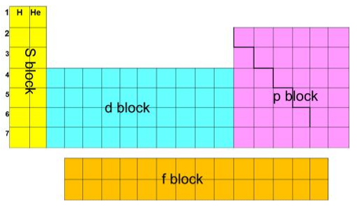

Atomic structure and the periodic table
Everything about how an element behaves comes from the arrangement of electrons around its nucleus. This topic starts with the particles inside an atom and the mass spectrometer that weighs them, then uses ionisation energies as the experimental evidence for shells, sub-shells and orbitals. It finishes by explaining the repeating patterns, or periodicity, across the periodic table.
1. Protons, neutrons and electrons
An atom has a tiny, dense nucleus containing protons and neutrons, surrounded by electrons that take up almost all of its volume. The nucleus holds nearly all of the mass, because an electron is about 1840 times lighter than a proton.
| Particle | Where it is found | Relative mass | Relative charge |
|---|---|---|---|
| proton | nucleus | 1 | +1 |
| neutron | nucleus | 1 | 0 |
| electron | orbitals around the nucleus | 1/1840 | −1 |
- Atomic (proton) number, Z: the number of protons in the nucleus. It defines the element: every atom with 11 protons is sodium.
- Mass number, A: the total number of protons and neutrons in the nucleus. The number of neutrons is \( A - Z \).
- Atoms are neutral: an atom has as many electrons as protons. An ion has gained or lost electrons, never protons.
An atom or ion is written with the mass number at the top left and the atomic number at the bottom left, for example \( {}^{7}_{3}\mathrm{Li} \): 3 protons, 3 electrons and \(7 - 3 = 4\) neutrons. For an ion, adjust only the electrons: a positive charge means electrons lost, a negative charge means electrons gained.
| Species | Protons | Neutrons | Electrons | Why |
|---|---|---|---|---|
| \( {}^{23}_{11}\mathrm{Na}^{+} \) | 11 | 12 | 10 | lost one electron |
| \( {}^{37}_{17}\mathrm{Cl}^{-} \) | 17 | 20 | 18 | gained one electron |
| \( {}^{27}_{13}\mathrm{Al}^{3+} \) | 13 | 14 | 10 | lost three electrons |
| \( {}^{32}_{16}\mathrm{S}^{2-} \) | 16 | 16 | 18 | gained two electrons |
| \( {}^{1}\mathrm{H}_2{}^{16}\mathrm{O} \) molecule | 10 | 8 | 10 | add up the atoms: 2 × H + O |
Isotopes
Isotopes are atoms of the same element with the same number of protons but different numbers of neutrons, so they have different mass numbers. Chlorine has two common isotopes, 35Cl (18 neutrons) and 37Cl (20 neutrons).
Isotopes of an element have the same chemical properties, because chemical reactions involve electrons and isotopes have the same electron configuration. Their physical properties that depend on mass, such as density, melting temperature and the rate at which a gas diffuses, differ slightly.
Relative masses
Single atoms are so light that their masses are compared with a standard, the carbon-12 atom, which is given a mass of exactly 12 units.
- Relative isotopic mass: the mass of an atom of one particular isotope compared with one twelfth of the mass of an atom of carbon-12.
- Relative atomic mass, \(A_\mathrm{r}\): the weighted mean mass of an atom of an element, taking account of the abundance of each isotope, compared with one twelfth of the mass of an atom of carbon-12. This is why \(A_\mathrm{r}\) is rarely a whole number.
- Relative molecular mass, \(M_\mathrm{r}\): the mean mass of a molecule compared with one twelfth of the mass of an atom of carbon-12. (For an ionic compound, the relative formula mass.)
2. Mass spectrometry
A mass spectrometer turns the particles in a sample into positive ions, separates the ions according to their mass-to-charge ratio, m/z, and measures how many of each arrive at a detector. The result is a mass spectrum: a vertical line for each kind of ion, at its m/z value, with a height showing its abundance. Most ions have a single positive charge, so m/z is simply the mass of the ion, which is the mass of the isotope (the electron removed has negligible mass).
A spectrum of an element therefore shows every isotope and its abundance. To label a peak, give the isotope and the charge, for example 25Mg+. Occasionally two electrons are knocked off; a 2+ ion has half the m/z, so 24Mg2+ appears at m/z = 12.
Calculating relative atomic mass
\[ A_\mathrm{r} = \frac{\sum (\text{isotopic mass} \times \text{percentage abundance})}{100} \qquad\text{or}\qquad A_\mathrm{r} = \frac{\sum (\text{isotopic mass} \times \text{relative abundance})}{\sum \text{relative abundances}} \]Use the first form when the abundances add up to 100%, and the second when you are given peak heights that do not.
A sample of silicon contains 92.2% 28Si, 4.7% 29Si and 3.1% 30Si. Calculate \(A_\mathrm{r}\) of silicon.
Multiply each isotopic mass by its abundance and add: \( (28 \times 92.2) + (29 \times 4.7) + (30 \times 3.1) = 2581.6 + 136.3 + 93.0 = 2810.9 \)
Divide by 100: \( A_\mathrm{r} = 28.1 \)
The answer must lie between the lightest and heaviest isotope, and close to the most abundant one. That is a quick check on your arithmetic.
The mass spectrum of boron has peaks at m/z = 10 and 11, with heights of 23 and 92. Calculate \(A_\mathrm{r}\).
\( \sum(\text{mass} \times \text{height}) = (10 \times 23) + (11 \times 92) = 230 + 1012 = 1242 \)
The heights add up to \( 23 + 92 = 115 \), not 100, so divide by 115: \( A_\mathrm{r} = 1242 \div 115 = 10.8 \)
Chlorine has isotopes of mass 35 and 37 and \(A_\mathrm{r}\) = 35.5. Find the percentage of each isotope.
Let the percentage of 35Cl be \(x\), so 37Cl is \(100 - x\): \( \dfrac{35x + 37(100 - x)}{100} = 35.5 \)
\( 3700 - 2x = 3550 \), so \( x = 75 \). Chlorine is 75% 35Cl and 25% 37Cl, a ratio of 3 : 1.
Spectra of diatomic molecules
Chlorine is made of Cl2 molecules, and each of the two atoms in a molecule can be either isotope. That gives three possible molecular ions: 35Cl–35Cl+ at m/z 70, 35Cl–37Cl+ at 72 and 37Cl–37Cl+ at 74. Their relative heights follow from the chance of picking each isotope.
The chance that an atom is 35Cl is \( \tfrac{3}{4} \), and that it is 37Cl is \( \tfrac{1}{4} \).
m/z 70 needs 35Cl twice: \( \tfrac{3}{4} \times \tfrac{3}{4} = \tfrac{9}{16} \)
m/z 72 can happen two ways, 35 then 37 or 37 then 35: \( 2 \times \tfrac{3}{4} \times \tfrac{1}{4} = \tfrac{6}{16} \)
Forgetting the factor of 2 is the most common mistake here.
m/z 74 needs 37Cl twice: \( \tfrac{1}{4} \times \tfrac{1}{4} = \tfrac{1}{16} \). The peaks at 70, 72 and 74 are in the ratio 9 : 6 : 1.
The spectrum also shows peaks at m/z 35 and 37, in the ratio 3 : 1, from single Cl+ ions made when some molecules break apart. Bromine is about 50% 79Br and 50% 81Br, so Br2 gives peaks at 158, 160 and 162 in the ratio 1 : 2 : 1.
Relative molecular mass from a mass spectrum
When a compound goes through a mass spectrometer, many molecules break into fragments, giving a series of peaks. The ion with the largest m/z is usually the whole molecule with one electron removed, the molecular ion, M+. Its m/z value equals the relative molecular mass. For butane, C4H10, the molecular ion peak is at m/z 58, even though the tallest peak (at 43) is a fragment.
Uses of mass spectrometers
- Space research: mass spectrometers on planetary probes identify the elements present, and their isotope ratios, which can differ from those on Earth.
- Sport: blood and urine samples are tested for banned drugs, such as anabolic steroids, and for the substances the body breaks them down into.
- Pharmaceutical industry: to identify newly made compounds and as a final check on the identity and purity of a drug.
- Radioactive dating: measuring the ratio of isotopes such as 14C to 12C to find the age of once-living material.
3. Ionisation energies
The first ionisation energy of an element is the energy needed to remove one electron from each atom in one mole of gaseous atoms, forming one mole of gaseous 1+ ions. For sodium: Na(g) → Na+(g) + e−.
The second ionisation energy is the energy needed to remove one electron from each ion in one mole of gaseous 1+ ions, forming one mole of gaseous 2+ ions. For titanium: Ti+(g) → Ti2+(g) + e−. Each further ionisation energy follows the same pattern.
Write the equation the same way for every element: one gaseous particle on the left, the ion one charge higher and one electron on the right. The (g) state symbols are essential, even for an element such as titanium that is a solid at room temperature, and even when the element never normally forms that ion.
Removing an electron means pulling it away from the attraction of the nucleus, so ionisation energies are always endothermic (positive). How much energy is needed depends on how strongly the nucleus attracts the electron being removed:
- Nuclear charge: more protons attract the electrons more strongly.
- Distance from the nucleus: an electron in a shell further out is attracted less strongly. Attraction falls off quickly with distance.
- Shielding: electrons in inner, full shells repel the outer electrons and cancel part of the nuclear attraction. Electrons in the same shell shield one another very little.
Two finer effects explain the small dips you will meet below: which sub-shell the electron is in (a p electron is slightly higher in energy than an s electron in the same shell) and whether it shares its orbital with another electron (two electrons in one orbital repel each other).
Successive ionisation energies
Each successive ionisation energy is larger than the one before. Once an electron has gone, the same number of protons is pulling on fewer electrons, so the remaining electrons are held more tightly and the ion is smaller. Every electron removed is being pulled away from a more positive ion.
The increase is not smooth. Plotted on a log scale, the ionisation energies of an element fall into groups, with a big jump each time the next electron has to come from a shell closer to the nucleus. That electron is much nearer the nucleus and has less shielding. The jumps are direct evidence that electrons are arranged in shells, and the number of electrons before the first big jump is the number of outer-shell electrons, which tells you the group.
The first five ionisation energies of an element, in kJ mol−1, are 578, 1817, 2745, 11 577 and 14 842. Which group is it in?
Compare each value with the one before: ×3.1, ×1.5, ×4.2, ×1.3. The biggest jump is between the 3rd and 4th ionisation energies.
So three electrons are relatively easy to remove and the fourth comes from an inner shell. The element has three outer electrons and is in group 13 (it is aluminium).
Look for the ratio, not just the difference: later ionisation energies are always bigger in absolute terms.
First ionisation energies across the periodic table
Plot the first ionisation energy against atomic number and a repeating pattern appears, which is an example of periodicity. Each period starts with a group 1 metal at a low point and ends with a noble gas at a peak.
- Helium is highest of all: its electrons are in the first shell, as close to the nucleus as possible, with no inner shells to shield them, and it has one more proton than hydrogen.
- Across a period the general trend is up: the number of protons increases, but the electrons are added to the same shell, so shielding hardly changes. The outer electrons feel a stronger attraction and are pulled closer.
- Down a group it falls: the outer electron is in a shell further from the nucleus and there are more inner shells shielding it. These effects outweigh the extra protons.
- From a noble gas to the next group 1 metal it drops sharply (neon to sodium, for example): sodium's outer electron is alone in a new shell, further out and shielded by two full inner shells.
Two small drops break the upward trend in each period, and both are evidence for sub-shells:
| Drop | Explanation |
|---|---|
| Mg (738) → Al (578), and Be (900) → B (801) | Aluminium's outer electron is in the 3p sub-shell, while magnesium's is in 3s. A 3p electron is higher in energy and is slightly shielded by the 3s electrons, so it is easier to remove. |
| P (1012) → S (1000), and N (1402) → O (1314) | Phosphorus has three 3p electrons, one in each 3p orbital. Sulfur's fourth 3p electron has to pair up in an orbital that already holds one. The two electrons in the same orbital repel each other, so one of them is easier to remove. |
The second ionisation energies of successive elements show the same pattern shifted one element to the left, because a 2+ ion forms from an ion that already has one electron fewer. The group 1 elements then sit at the peaks: removing a second electron from Na+ means breaking into the full 2p sub-shell. Lithium has the biggest second ionisation energy of all, because its second electron comes from the 1s orbital with no shielding and three protons pulling on it.
4. Shells, sub-shells and orbitals
Ionisation energies show that electrons are arranged in shells (principal energy levels, numbered n = 1, 2, 3, 4 outwards from the nucleus) and that each shell is split into sub-shells labelled s, p, d and f. Each sub-shell is made of orbitals.
An orbital is a region around the nucleus where there is a high probability of finding an electron. Each orbital holds at most two electrons, and they must have opposite spins.
| Sub-shell | Orbitals | Maximum electrons | First appears in shell |
|---|---|---|---|
| s | 1 | 2 | n = 1 |
| p | 3 | 6 | n = 2 |
| d | 5 | 10 | n = 3 |
| f | 7 | 14 | n = 4 |
So the first shell holds 2 electrons (1s), the second 8 (2s, 2p), the third 18 (3s, 3p, 3d) and the fourth 32 (4s, 4p, 4d, 4f). The pattern is \(2n^2\).
Filling the orbitals
- Lowest energy first: electrons go into the lowest-energy orbital available. The order is 1s, 2s, 2p, 3s, 3p, 4s, 3d, 4p. The 4s sub-shell is lower in energy than 3d, so it fills first.
- Two per orbital, with opposite spins.
- Orbitals of equal energy fill singly first: in a p or d sub-shell, electrons occupy separate orbitals, with parallel spins, before any pairing starts. Electrons repel each other, so they spread out over the available orbitals.
Configurations are written as shell number, sub-shell letter and the number of electrons as a superscript. Oxygen is 1s2 2s2 2p4. A shorter form uses the previous noble gas for the inner electrons: sodium, 1s2 2s2 2p6 3s1, is [Ne] 3s1. In an electrons-in-boxes diagram each box is an orbital and each arrow an electron, with up and down arrows for the two spins.
Two elements up to krypton break the simple filling order. Chromium is [Ar] 3d5 4s1, not [Ar] 3d4 4s2, and copper is [Ar] 3d10 4s1, not [Ar] 3d9 4s2. A half-full or completely full set of d orbitals is a more stable arrangement. Also remember to write 3d before 4s once the 3d sub-shell holds electrons, for example iron is [Ar] 3d6 4s2.
Configurations of ions
For an s- or p-block element, take the atom's configuration and remove electrons from the outermost sub-shell to make a positive ion, or add them to the next available orbitals to make a negative ion. Mg (1s2 2s2 2p6 3s2) becomes Mg2+ (1s2 2s2 2p6), and O (1s2 2s2 2p4) becomes O2− (1s2 2s2 2p6). These two ions have the same configuration as neon: they are isoelectronic. Further down, Br− is [Ar] 3d10 4s2 4p6, the same as krypton, and Ga3+ is [Ar] 3d10, because gallium loses its 4p and both 4s electrons.
5. The periodic table and its blocks
Elements are arranged in order of increasing atomic number. A period is a row, and its number is the outer shell being filled. A group is a column of elements with the same outer-shell configuration, which is why they react in similar ways: chemistry is all about the outer electrons. Sodium and potassium, for example, both have one outer s electron that they lose easily, so both react vigorously with water to form 1+ ions.
The table divides into blocks named after the sub-shell that holds the highest-energy electron. Groups 1 and 2 form the s block, groups 13 to 18 the p block (except helium, 1s2, which is placed with the noble gases), the transition elements the d block, and the lanthanides and actinides the f block.

6. Periodicity in periods 2 and 3
Atomic radius
Atomic radius decreases across a period, from about 0.16 nm for sodium to 0.10 nm for chlorine. Each element has one more proton than the one before, but the extra electron goes into the same shell, so shielding stays about the same. The greater nuclear charge pulls all the outer electrons closer. The same trend appears in period 2. Down a group, radius increases because each element has an extra shell.
First ionisation energy
For the reasons above, first ionisation energy rises across period 3 from Na (496 kJ mol−1) to Ar (1521 kJ mol−1), with small drops at Mg → Al and P → S. Period 2 shows the same shape, with drops at Be → B and N → O; when you explain those, change 3s and 3p to 2s and 2p.
Melting and boiling temperatures
Melting and boiling temperatures depend on what has to be overcome, which depends on the structure and bonding of each element.
| Element | Na | Mg | Al | Si | P (P4) | S (S8) | Cl (Cl2) | Ar |
|---|---|---|---|---|---|---|---|---|
| Melting temperature / K | 371 | 923 | 933 | 1687 | 317 | 388 | 172 | 84 |
| Boiling temperature / K | 1156 | 1363 | 2792 | 3538 | 553 | 718 | 239 | 87 |
| Structure | giant metallic | giant covalent | simple molecular | single atoms | ||||
- Na, Mg, Al (giant metallic): metallic bonding gets stronger from Na to Al. Each atom gives 1, 2 and then 3 electrons to the delocalised sea, and the ions become smaller and more highly charged, so the attraction between the ions and the delocalised electrons increases. The boiling temperatures show this most clearly.
- Si (giant covalent): every atom is held by four strong covalent bonds in a giant lattice. Melting means breaking many of these bonds, which takes a great deal of energy, so silicon has the highest melting temperature in the period.
- P4, S8, Cl2 (simple molecular): only the weak London forces between molecules are overcome, not the covalent bonds inside them, so the temperatures are low. S8 has more electrons (128) than P4 (60), so it has stronger London forces and a higher melting temperature; Cl2 (34 electrons) is lower still.
- Ar (single atoms): there are only very weak London forces between separate atoms with 18 electrons each, so argon has the lowest values.
Period 2 follows the same pattern: Li and Be are metallic, B and C (diamond or graphite) are giant covalent with very high melting temperatures, N2, O2 and F2 are simple molecules that are gases at room temperature, and neon exists as single atoms with the lowest melting temperature of all.
Quick checks
How many protons, neutrons and electrons are in the ion \( {}^{34}_{16}\mathrm{S}^{2-} \)?
Z = 16 gives 16 protons, and \(34 - 16 = 18\) neutrons. The 2− charge means two electrons have been gained: \(16 + 2 = 18\) electrons. The first option forgets the charge; 14 electrons would be a 2+ ion.
An element has two isotopes, of mass 63 (69.2%) and 65 (30.8%). What is its relative atomic mass?
\(A_\mathrm{r} = (63 \times 69.2 + 65 \times 30.8) / 100 = 63.6\). The simple average, 64.0, ignores the fact that the lighter isotope is more than twice as abundant.
Chlorine is 75% 35Cl and 25% 37Cl. What are the relative heights of the Cl2+ peaks at m/z 70, 72 and 74?
\(\tfrac34 \times \tfrac34 = \tfrac{9}{16}\), \(2 \times \tfrac34 \times \tfrac14 = \tfrac{6}{16}\) and \(\tfrac14 \times \tfrac14 = \tfrac{1}{16}\). The 72 peak can form in two ways, which is why it is 6, not 3. A 1 : 2 : 1 ratio belongs to Br2, whose isotopes are equally abundant.
The first four ionisation energies of an element are 738, 1451, 7733 and 10 543 kJ mol−1. Which group is the element in?
The big jump comes between the 2nd and 3rd values (1451 to 7733, more than five times bigger). Two electrons come from the outer shell and the third from a full inner shell, so the element is in group 2 (it is magnesium).
Why is the first ionisation energy of oxygen lower than that of nitrogen?
Nitrogen has one electron in each 2p orbital. Oxygen's fourth 2p electron has to pair up, and repulsion between the two electrons in that orbital makes one of them easier to remove. Both elements lose their electron from the second shell, and oxygen has more protons, not fewer.
What is the electron configuration of a chromium atom (Z = 24)?
Chromium is an exception: a half-full 3d sub-shell, with one electron in each of the five d orbitals and one in 4s, is more stable than 3d4 4s2, the configuration the simple filling order predicts.
Which period 3 element has the highest melting temperature?
Silicon has a giant covalent structure, so melting means breaking strong covalent bonds throughout the lattice. Sulfur is simple molecular: melting only overcomes London forces between S8 molecules, which are much weaker than covalent bonds.
Why does the first ionisation energy decrease down group 1, even though the nuclear charge increases?
Each step down adds a shell. The outer s electron is further away and has more full shells between it and the nucleus, and these two effects outweigh the extra protons, so less energy is needed to remove it.